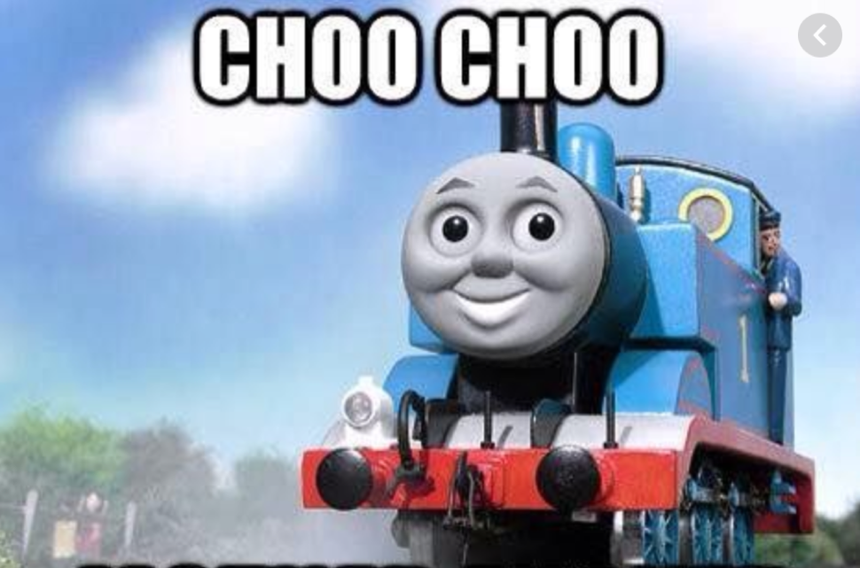
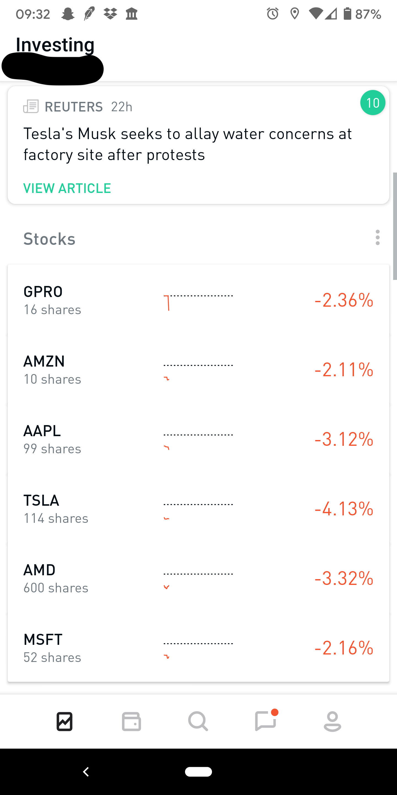
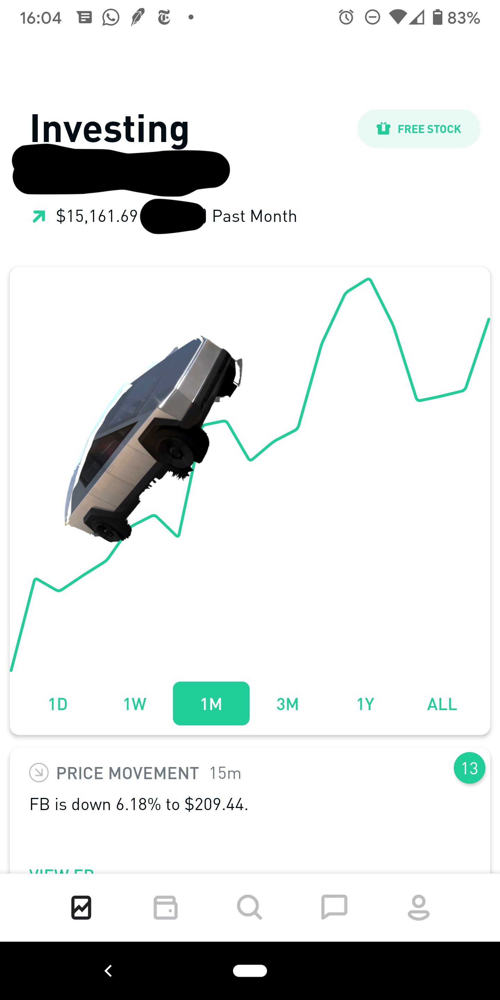

February 01, 2020
The story of the Tortoise and the Hare gave rise to the phrase “slow and study wins the race.” Unlike the tortoise, the hare lacked stability and predictability, both of which are important in investing, although, not the most exciting.
Much of 2019 could be comparable to the tortoise – safe, slow and stable. Although I did appreciate this, I wanted to start the new year by doing something more YOLO.
Also, given this is my first investing blog, I just want to say that I’m by no means an expert in this field. Everything that I know and every conclusion I’ve made is based on patterns that I’ve seen in the market since starting in the summer of 2015.
Anyways, sit back and relax because it’s about to be full steam ahead.
Last year, my portfolio only consisted of “safe” stocks. By this, I refer to stocks that would most likely perform well long-term. For example, Apple, Amazon, and Google to name a few since those are all “apex” companies that won’t be going away any time soon. I figured that even during the worst-case scenario of a recession, everything would eventually recover in the long run. Remember the tech sell-off of 2018 associated with the start of the Chinese trade war? Although that wasn’t a recession, I remember all the tech stocks I owned lost about 40% in value in about a week. However, the market did recover despite it taking about four months.
While those stocks are great given their long-term stability, they’re not so great for explosiveness. Given that, I started off by maxing my Robinhood margins and allocating 60% of my portfolio towards volatile stocks, namely AMD and Tesla, which I’ve been watching the past few weeks. Let’s call those stocks isotope stocks since I’m sure you ALL remember from chemistry class that isotopes are unstable elements, right?
For risk mitigation, I set a hard cut-off at a 6% single day loss. I figured this was a good number because, from my experience, anything more than that usually has enough momentum to carry over to the next day. I also told myself that I would sell everything before earning reports just because I feel like earnings is 50/50.
Below is what my portfolio looked like for much of the month (yes yes lots of negative digits since that screenshot was when the coronavirus scare starting kicking in).
Safe: Amazon – Been stagnant for a while. Still have it is because I’m at a loss and am planning on selling at a breakeven price. Apple – Much like that A+ kid in class. Solid performance thus far. Microsoft – Not as great as Apple but not a C student either.
Isotopes: AMD – Crazy crazy growth for 2019 but it’s since died down a bit. Tesla - Been in ludicrous mode pretty much the whole time.
Misc: GoPro – First stock I ever bought. It’s pretty much a dinosaur skeleton at this point but I still have it as a reminder to not make stupid decisions Chipotle – Had a fair share in this stock, but I ultimately decided to sell it to buy more Tesla.
This month in summary:
I decided to slap a Cybertruck on the graph since a large part of it was thanks to Tesla.
The highest reached was 18k but the end of month was a bit rough because Mother Nature decided to surprise us with Coronavirus, leading to a plunge in the market (as show in the last dip).
Since then, I’ve sold off most of the isotope stocks.
As for next month, I’m planning on switching up my portfolio but I’m actually not sure what I’ll do yet since the market is weird because of the epidemic.
Until the end of next month!